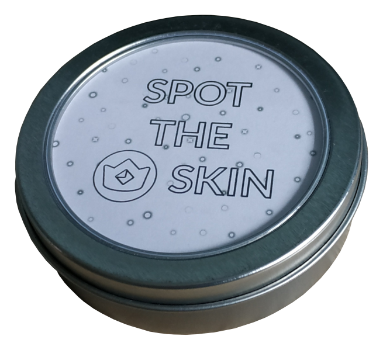

Spot the Skin is a Crypto Royale card game that is based on the 'Spot It' / 'Dobble' game. Rules are pretty simple. Your task is to spot the Crypto Royale skin that is visible on both cards and name it before other players will. If you choose to download PDF for making physical cards, you will find 31 cards with 31 unique Crypto Royale skins in total. Each card has 6 skins and always only one skin shared between any two cards! You can play alone or up to 6 players.
Place one card at the center of a table and share the rest of the cards between players. At once, all players turn their cards up such a way they can see the skins only on one card, and now everyone try to spot the shared skin. When the player spots the skin and name it, that player put their card on the pile of cards at the center of the table and now everyone is trying to spot the shared skin between their top card and the card that was just placed on the pile. The game ends when either one of the players placed all their cards or all the cards were placed on the table (depends on if you want to play for 2nd, 3rd, etc. places).
You can also try online version and get a certificate with the shortest time you spotted all the skins. Share your certificate with your friends and see if they can beat your high score!
Instructions are included inside the printable PDF, but you can see the gallery below for reference how the process could look like.